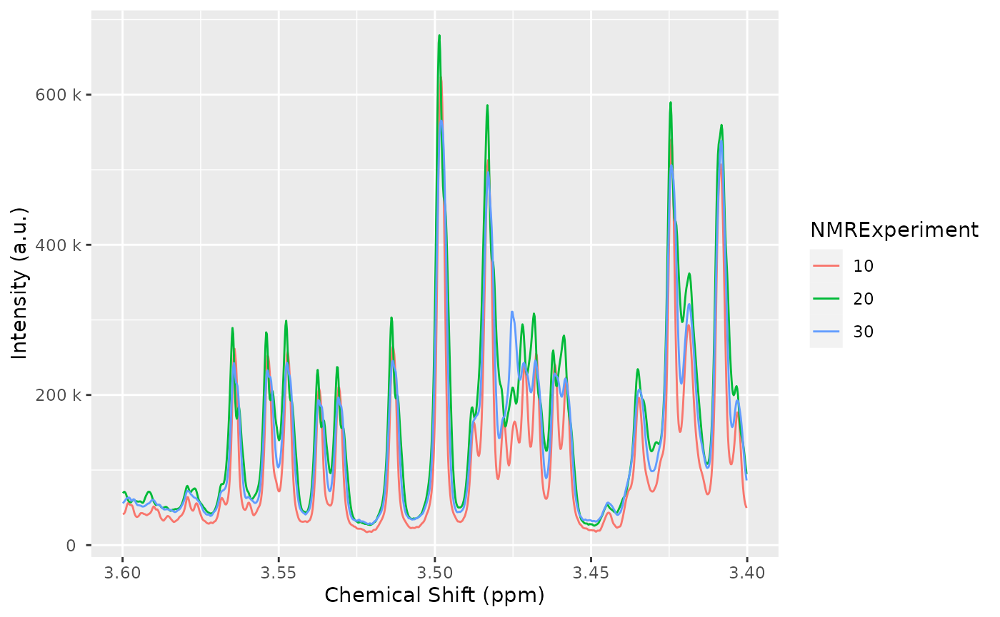
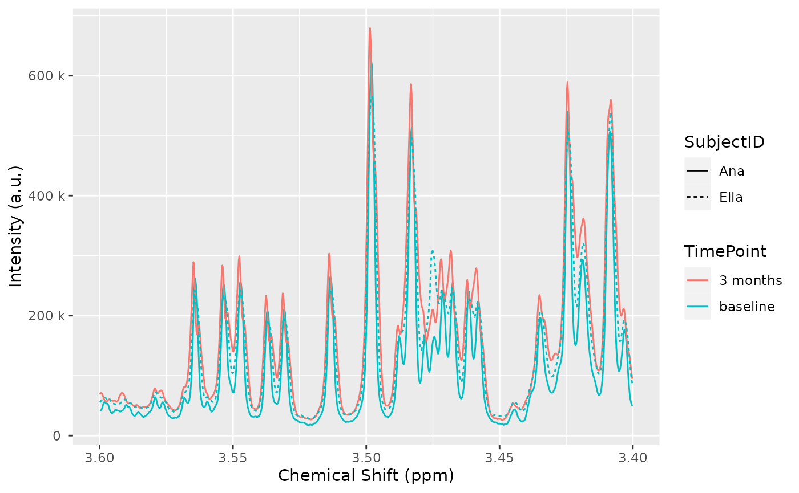
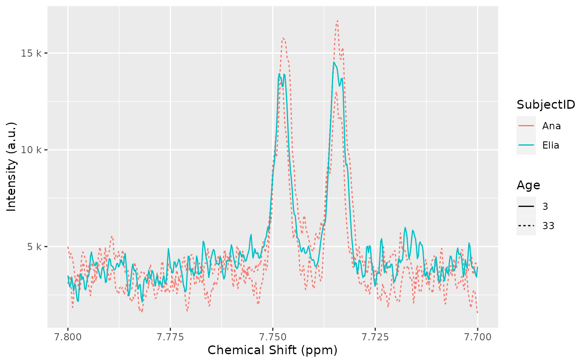

vignettes/Vig02-handling-metadata-and-annotations.Rmd
Vig02-handling-metadata-and-annotations.RmdAbstract
This vignette shows some examples on how to explore sample metadata and add additional sample annotations, coming from one or more CSV or Excel files.
We start by loading AlpsNMR and some convenience
libraries:
We also load the demo samples, see the introduction vignette for further details:
MeOH_plasma_extraction_dir <- system.file("dataset-demo", package = "AlpsNMR")
zip_files <- list.files(MeOH_plasma_extraction_dir, pattern = glob2rx("*.zip"), full.names = TRUE)
dataset <- nmr_read_samples(sample_names = zip_files)
dataset <- nmr_interpolate_1D(dataset, axis = NULL)
dataset## An nmr_dataset_1D (3 samples)
Most NMR formats include besides the actual NMR spectra, a lot of additional information describing the acquisition properties, instrument settings, and spectral processing information.
AlpsNMR parses all that information whenever possible,
and stores it in the nmr_datasetobject, so the user can
inspect it. Since there may be a lot of information, the data is stored
in several data frames.
The available data frames are:
nmr_meta_groups(dataset)## [1] "info" "orig" "title" "acqus" "procs" "levels" "external"We can further explore each of those groups.
For instance, for the acqus group we find 239
columns:
acqus_metadata <- nmr_meta_get(dataset, groups = "acqus")
acqus_metadata## # A tibble: 3 × 239
## NMRExperiment acqus_TITLE acqus_JCAMPDX acqus_DATATYPE acqus_NPOINTS
## <chr> <chr> <dbl> <chr> <chr>
## 1 10 Parameter file, TopS… 5 Parameter Val… "13\t$$ modi…
## 2 20 Parameter file, TopS… 5 Parameter Val… "15\t$$ modi…
## 3 30 Parameter file, TopS… 5 Parameter Val… "13\t$$ modi…
## # … with 234 more variables: acqus_ORIGIN <chr>, acqus_OWNER <chr>,
## # acqus_Stamp <list>, acqus_ACQT0 <dbl>, acqus_AMP <list>,
## # acqus_AMPCOIL <list>, acqus_ANAVPT <dbl>, acqus_AQSEQ <dbl>,
## # acqus_AQ_mod <dbl>, acqus_AUNM <chr>, acqus_AUTOPOS <chr>, acqus_BF1 <dbl>,
## # acqus_BF2 <dbl>, acqus_BF3 <dbl>, acqus_BF4 <dbl>, acqus_BF5 <dbl>,
## # acqus_BF6 <dbl>, acqus_BF7 <dbl>, acqus_BF8 <dbl>, acqus_BWFAC <list>,
## # acqus_BYTORDA <dbl>, acqus_CAGPARS <list>, acqus_CHEMSTR <chr>, …Here follows a long list of all the columns available:
colnames(acqus_metadata)## [1] "NMRExperiment" "acqus_TITLE" "acqus_JCAMPDX"
## [4] "acqus_DATATYPE" "acqus_NPOINTS" "acqus_ORIGIN"
## [7] "acqus_OWNER" "acqus_Stamp" "acqus_ACQT0"
## [10] "acqus_AMP" "acqus_AMPCOIL" "acqus_ANAVPT"
## [13] "acqus_AQSEQ" "acqus_AQ_mod" "acqus_AUNM"
## [16] "acqus_AUTOPOS" "acqus_BF1" "acqus_BF2"
## [19] "acqus_BF3" "acqus_BF4" "acqus_BF5"
## [22] "acqus_BF6" "acqus_BF7" "acqus_BF8"
## [25] "acqus_BWFAC" "acqus_BYTORDA" "acqus_CAGPARS"
## [28] "acqus_CHEMSTR" "acqus_CNST" "acqus_CPDPRG"
## [31] "acqus_D" "acqus_DATE" "acqus_DE"
## [34] "acqus_DECBNUC" "acqus_DECIM" "acqus_DECNUC"
## [37] "acqus_DECSTAT" "acqus_DIGMOD" "acqus_DIGTYP"
## [40] "acqus_DQDMODE" "acqus_DR" "acqus_DS"
## [43] "acqus_DSPFIRM" "acqus_DSPFVS" "acqus_DTYPA"
## [46] "acqus_EXP" "acqus_FCUCHAN" "acqus_FL1"
## [49] "acqus_FL2" "acqus_FL3" "acqus_FL4"
## [52] "acqus_FN_INDIRECT" "acqus_FOV" "acqus_FQ1LIST"
## [55] "acqus_FQ2LIST" "acqus_FQ3LIST" "acqus_FQ4LIST"
## [58] "acqus_FQ5LIST" "acqus_FQ6LIST" "acqus_FQ7LIST"
## [61] "acqus_FQ8LIST" "acqus_FRQLO3" "acqus_FRQLO3N"
## [64] "acqus_FS" "acqus_FTLPGN" "acqus_FW"
## [67] "acqus_FnILOOP" "acqus_FnMODE" "acqus_FnTYPE"
## [70] "acqus_GPNAM" "acqus_GPX" "acqus_GPY"
## [73] "acqus_GPZ" "acqus_GRDPROG" "acqus_GRPDLY"
## [76] "acqus_HDDUTY" "acqus_HDRATE" "acqus_HGAIN"
## [79] "acqus_HL1" "acqus_HL2" "acqus_HL3"
## [82] "acqus_HL4" "acqus_HOLDER" "acqus_HPMOD"
## [85] "acqus_HPPRGN" "acqus_IN" "acqus_INF"
## [88] "acqus_INP" "acqus_INSTRUM" "acqus_INTEGFAC"
## [91] "acqus_L" "acqus_LFILTER" "acqus_LGAIN"
## [94] "acqus_LINPSTP" "acqus_LOCKED" "acqus_LOCKFLD"
## [97] "acqus_LOCKGN" "acqus_LOCKPOW" "acqus_LOCKPPM"
## [100] "acqus_LOCNUC" "acqus_LOCPHAS" "acqus_LOCSHFT"
## [103] "acqus_LOCSW" "acqus_LTIME" "acqus_MASR"
## [106] "acqus_MASRLST" "acqus_MULEXPNO" "acqus_NBL"
## [109] "acqus_NC" "acqus_NLOGCH" "acqus_NOVFLW"
## [112] "acqus_NS" "acqus_NUC1" "acqus_NUC2"
## [115] "acqus_NUC3" "acqus_NUC4" "acqus_NUC5"
## [118] "acqus_NUC6" "acqus_NUC7" "acqus_NUC8"
## [121] "acqus_NUCLEUS" "acqus_NUSLIST" "acqus_NusAMOUNT"
## [124] "acqus_NusFPNZ" "acqus_NusJSP" "acqus_NusSEED"
## [127] "acqus_NusSPTYPE" "acqus_NusT2" "acqus_NusTD"
## [130] "acqus_O1" "acqus_O2" "acqus_O3"
## [133] "acqus_O4" "acqus_O5" "acqus_O6"
## [136] "acqus_O7" "acqus_O8" "acqus_OVERFLW"
## [139] "acqus_P" "acqus_PACOIL" "acqus_PAPS"
## [142] "acqus_PARMODE" "acqus_PCPD" "acqus_PEXSEL"
## [145] "acqus_PHCOR" "acqus_PHLIST" "acqus_PHP"
## [148] "acqus_PH_ref" "acqus_PL" "acqus_PLSTEP"
## [151] "acqus_PLSTRT" "acqus_PLW" "acqus_PLWMAX"
## [154] "acqus_PQPHASE" "acqus_PQSCALE" "acqus_PR"
## [157] "acqus_PRECHAN" "acqus_PRGAIN" "acqus_PROBHD"
## [160] "acqus_PULPROG" "acqus_PW" "acqus_PYNM"
## [163] "acqus_ProjAngle" "acqus_QNP" "acqus_RD"
## [166] "acqus_RECCHAN" "acqus_RECPH" "acqus_RECPRE"
## [169] "acqus_RECPRFX" "acqus_RECSEL" "acqus_RG"
## [172] "acqus_RO" "acqus_RSEL" "acqus_S"
## [175] "acqus_SELREC" "acqus_SFO1" "acqus_SFO2"
## [178] "acqus_SFO3" "acqus_SFO4" "acqus_SFO5"
## [181] "acqus_SFO6" "acqus_SFO7" "acqus_SFO8"
## [184] "acqus_SOLVENT" "acqus_SOLVOLD" "acqus_SP"
## [187] "acqus_SPECTR" "acqus_SPINCNT" "acqus_SPNAM"
## [190] "acqus_SPOAL" "acqus_SPOFFS" "acqus_SPPEX"
## [193] "acqus_SPW" "acqus_SUBNAM" "acqus_SW"
## [196] "acqus_SWIBOX" "acqus_SW_h" "acqus_SWfinal"
## [199] "acqus_SigLockShift" "acqus_TD" "acqus_TD0"
## [202] "acqus_TD_INDIRECT" "acqus_TDav" "acqus_TE"
## [205] "acqus_TE1" "acqus_TE2" "acqus_TE3"
## [208] "acqus_TE4" "acqus_TEG" "acqus_TE_MAGNET"
## [211] "acqus_TE_PIDX" "acqus_TE_STAB" "acqus_TL"
## [214] "acqus_TOTROT" "acqus_TUBE_TYPE" "acqus_USERA1"
## [217] "acqus_USERA2" "acqus_USERA3" "acqus_USERA4"
## [220] "acqus_USERA5" "acqus_V9" "acqus_VALIDCODE"
## [223] "acqus_VALIST" "acqus_VCLIST" "acqus_VDLIST"
## [226] "acqus_VPLIST" "acqus_VTLIST" "acqus_WBST"
## [229] "acqus_WBSW" "acqus_XGAIN" "acqus_XL"
## [232] "acqus_YL" "acqus_YMAX_a" "acqus_YMIN_a"
## [235] "acqus_ZGOPTNS" "acqus_ZL1" "acqus_ZL2"
## [238] "acqus_ZL3" "acqus_ZL4"We can check for instance that the nuclei used on all samples is 1H:
acqus_metadata[, c("NMRExperiment", "acqus_NUC1")]## # A tibble: 3 × 2
## NMRExperiment acqus_NUC1
## <chr> <chr>
## 1 10 1H
## 2 20 1H
## 3 30 1HSimilarly, we can obtain the processing settings:
procs_metadata <- nmr_meta_get(dataset, groups = "procs")
procs_metadata## # A tibble: 3 × 137
## NMRExperiment procs_TITLE procs_JCAMPDX procs_DATATYPE procs_NPOINTS
## <chr> <chr> <dbl> <chr> <chr>
## 1 10 Parameter file, TopS… 5 Parameter Val… "6\t$$ modif…
## 2 20 Parameter file, TopS… 5 Parameter Val… "11\t$$ modi…
## 3 30 Parameter file, TopS… 5 Parameter Val… "6\t$$ modif…
## # … with 132 more variables: procs_ORIGIN <chr>, procs_OWNER <chr>,
## # procs_Stamp <list>, procs_ABSF1 <dbl>, procs_ABSF2 <dbl>, procs_ABSG <dbl>,
## # procs_ABSL <dbl>, procs_ALPHA <dbl>, procs_AQORDER <dbl>,
## # procs_ASSFAC <dbl>, procs_ASSFACI <dbl>, procs_ASSFACX <dbl>,
## # procs_ASSWID <dbl>, procs_AUNMP <chr>, procs_AXLEFT <dbl>,
## # procs_AXNAME <chr>, procs_AXNUC <chr>, procs_AXRIGHT <dbl>,
## # procs_AXTYPE <dbl>, procs_AXUNIT <chr>, procs_AZFE <dbl>, …Besides the sample metadata, most studies usually have design variables or annotations, that describe the biological sample. These annotations do not come from the instrument itself, but rather usually are defined on an external CSV or Excel file.
AlpsNMR supports adding external annotations
from data frames.
Let’s load a table from an Excel file, that has some annotations for our demo dataset:
excel_file <- file.path(MeOH_plasma_extraction_dir, "dummy_metadata.xlsx")
subject_timepoint <- read_excel(excel_file, sheet = 1)
subject_timepoint## # A tibble: 3 × 3
## NMRExperiment SubjectID TimePoint
## <chr> <chr> <chr>
## 1 10 Ana baseline
## 2 20 Ana 3 months
## 3 30 Elia baselineNote how this table includes a first column named
NMRExperiment. This column allows us to match the rows in
the table with our samples.
We can embed these external annotations in our dataset:
dataset <- nmr_meta_add(dataset, metadata = subject_timepoint, by = "NMRExperiment")We can retrieve these external columns from the dataset:
nmr_meta_get(dataset, groups = "external")## # A tibble: 3 × 3
## NMRExperiment SubjectID TimePoint
## <chr> <chr> <chr>
## 1 10 Ana baseline
## 2 20 Ana 3 months
## 3 30 Elia baselineAfter adding the annotations to the dataset, we can use them in plots:

Sometimes due to the study design we have more than one table that we want to match with our data.
For instance, a collaborator just sent us this table:
additional_annotations <- data.frame(
NMRExperiment = c("10", "20", "30"),
SampleCollectionDay = c(1, 91, 3)
)
additional_annotations## NMRExperiment SampleCollectionDay
## 1 10 1
## 2 20 91
## 3 30 3Since we have the NMRExperiment column it is very easy
to include it:
dataset <- nmr_meta_add(dataset, additional_annotations)And the column has been added:
nmr_meta_get(dataset, groups = "external")## # A tibble: 3 × 4
## NMRExperiment SubjectID TimePoint SampleCollectionDay
## <chr> <chr> <chr> <dbl>
## 1 10 Ana baseline 1
## 2 20 Ana 3 months 91
## 3 30 Elia baseline 3We received further information, but this time it is related to the
SubjectID that we added before:
subject_related_information <- data.frame(
SubjectID = c("Ana", "Elia"),
Age = c(33, 3),
Sex = c("female", "female")
)
subject_related_information## SubjectID Age Sex
## 1 Ana 33 female
## 2 Elia 3 femaleNote how in this case we only have two rows, and we don’t have the
NMRExperiment column anymore.
We can specify the by argument in
nmr_meta_add() to use another column for merging:
dataset <- nmr_meta_add(dataset, subject_related_information, by = "SubjectID")And the Sex and Age columns will have been added:
nmr_meta_get(dataset, groups = "external")## # A tibble: 3 × 6
## NMRExperiment SubjectID TimePoint SampleCollectionDay Age Sex
## <chr> <chr> <chr> <dbl> <dbl> <chr>
## 1 10 Ana baseline 1 33 female
## 2 20 Ana 3 months 91 33 female
## 3 30 Elia baseline 3 3 femaleWe can also use it in a plot:
plot(dataset, color = "SubjectID", linetype = "as.factor(Age)", chemshift_range = c(7.7, 7.8)) + ggplot2::labs(linetype = "Age")
In this vignette we have seen how to explore the sample metadata, including acquisition and processing settings, and how to embed external annotations and use them in plots.
AlpsNMR is able to merge external annotations as long as
there is a common annotation in the data that can be used as merging
key.
To import external data, you may want to use the following functions:
| File type | Suggested function |
|---|---|
| CSV | readr::read_csv() |
| TSV | readr::read_tsv() |
| SPSS | haven::read_spss() |
| xls/xlsx | readxl::read_excel() |
## R version 4.2.0 (2022-04-22)
## Platform: x86_64-pc-linux-gnu (64-bit)
## Running under: Ubuntu 20.04.4 LTS
##
## Matrix products: default
## BLAS: /usr/lib/x86_64-linux-gnu/openblas-pthread/libblas.so.3
## LAPACK: /usr/lib/x86_64-linux-gnu/openblas-pthread/liblapack.so.3
##
## locale:
## [1] LC_CTYPE=en_US.UTF-8 LC_NUMERIC=C
## [3] LC_TIME=en_US.UTF-8 LC_COLLATE=en_US.UTF-8
## [5] LC_MONETARY=en_US.UTF-8 LC_MESSAGES=en_US.UTF-8
## [7] LC_PAPER=en_US.UTF-8 LC_NAME=C
## [9] LC_ADDRESS=C LC_TELEPHONE=C
## [11] LC_MEASUREMENT=en_US.UTF-8 LC_IDENTIFICATION=C
##
## attached base packages:
## [1] stats graphics grDevices utils datasets methods base
##
## other attached packages:
## [1] AlpsNMR_3.99.1 future_1.26.1 readxl_1.4.0 dplyr_1.0.9
## [5] BiocStyle_2.24.0
##
## loaded via a namespace (and not attached):
## [1] sass_0.4.1 tidyr_1.2.0 jsonlite_1.8.0
## [4] ellipse_0.4.3 bslib_0.3.1 highr_0.9
## [7] BiocManager_1.30.18 cellranger_1.1.0 yaml_2.3.5
## [10] ggrepel_0.9.1 globals_0.15.0 pillar_1.7.0
## [13] lattice_0.20-45 glue_1.6.2 digest_0.6.29
## [16] RColorBrewer_1.1-3 colorspace_2.0-3 htmltools_0.5.2
## [19] Matrix_1.4-1 plyr_1.8.7 pkgconfig_2.0.3
## [22] mixOmics_6.20.0 listenv_0.8.0 bookdown_0.27
## [25] purrr_0.3.4 corpcor_1.6.10 scales_1.2.0
## [28] RSpectra_0.16-1 BiocParallel_1.30.3 tibble_3.1.7
## [31] farver_2.1.0 generics_0.1.2 ggplot2_3.3.6
## [34] ellipsis_0.3.2 cachem_1.0.6 cli_3.3.0
## [37] magrittr_2.0.3 crayon_1.5.1 memoise_2.0.1
## [40] evaluate_0.15 fs_1.5.2 fansi_1.0.3
## [43] parallelly_1.32.0 MASS_7.3-57 progressr_0.10.1
## [46] textshaping_0.3.6 tools_4.2.0 lifecycle_1.0.1
## [49] matrixStats_0.62.0 stringr_1.4.0 munsell_0.5.0
## [52] compiler_4.2.0 pkgdown_2.0.4 jquerylib_0.1.4
## [55] signal_0.7-7 systemfonts_1.0.4 rlang_1.0.2
## [58] grid_4.2.0 igraph_1.3.2 labeling_0.4.2
## [61] rmarkdown_2.14 gtable_0.3.0 codetools_0.2-18
## [64] rARPACK_0.11-0 reshape2_1.4.4 R6_2.5.1
## [67] gridExtra_2.3 knitr_1.39 fastmap_1.1.0
## [70] utf8_1.2.2 rprojroot_2.0.3 ragg_1.2.2
## [73] desc_1.4.1 stringi_1.7.6 parallel_4.2.0
## [76] Rcpp_1.0.8.3 vctrs_0.4.1 tidyselect_1.1.2
## [79] xfun_0.31